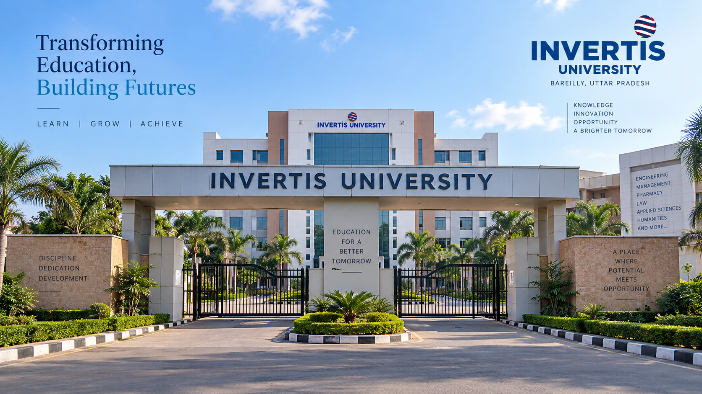
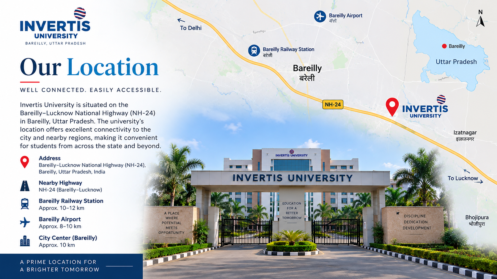
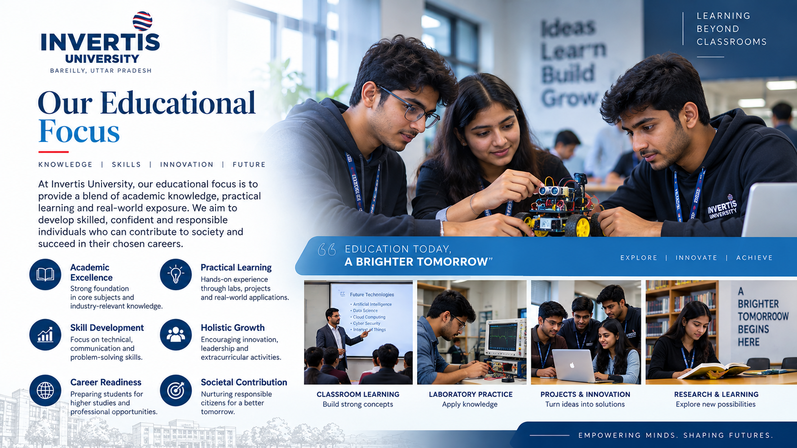
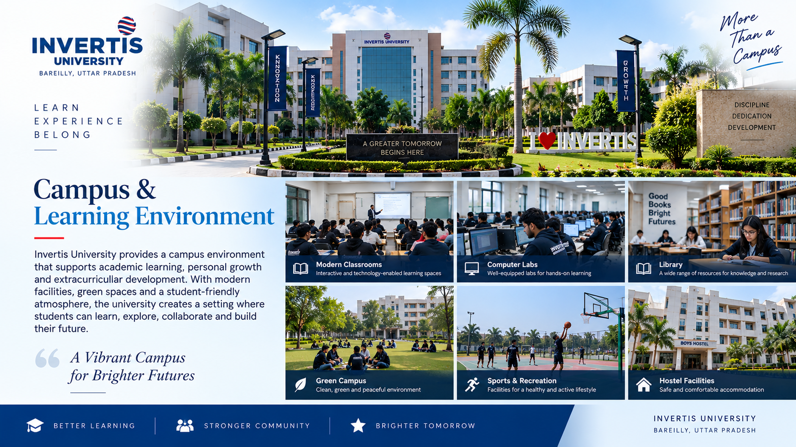
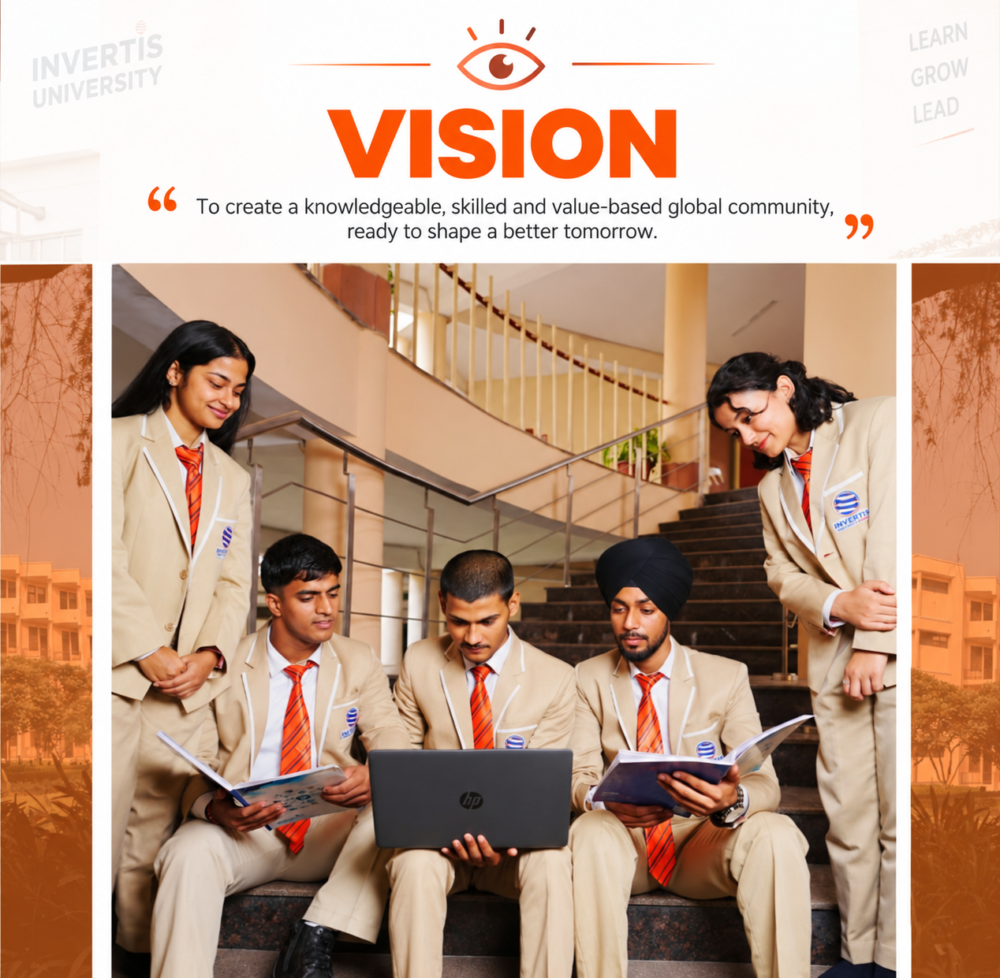
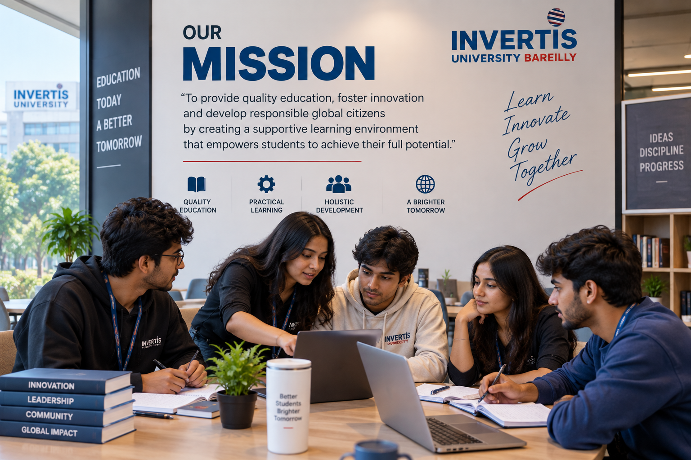

--About Invertis University--
Invertis University is a private university located in Bareilly, Uttar Pradesh. It offers undergraduate, postgraduate and professional programs across various fields.
The university focuses on academic knowledge, practical skills, innovation and the overall development of students.

--Location of University--
Invertis University is situated on the Bareilly–Lucknow National Highway in Bareilly, Uttar Pradesh. Its location provides connectivity to
the city while offering a dedicated campus environment for education and student activities.

--Educational Focus of University--
The university emphasizes a combination of theoretical knowledge and practical learning. Students are encouraged to develop technical skills, creativity, communication abilities
and problem-solving skills through classroom learning, practical work, projects and other academic activities.

--Campus & Learning Environment of University--
Invertis University provides a campus environment designed to support academic learning as well as extracurricular development. Students have access to classrooms, laboratories, library facilities,
computer resources and spaces for various student activities, helping create a learning-oriented environment.

--Vision and Mission of University--
--Vision--
Invertis University aims to create an environment that encourages knowledge, innovation and continuous learning. Its vision focuses on developing students into confident, skilled and responsible individuals.
The university seeks to combine academic excellence with practical exposure and modern education. It encourages creativity, research and new ideas among students. The goal is to prepare learners to face future challenges and contribute positively to society.

--Mission--
The mission of Invertis University is to provide quality education through effective teaching, practical learning and industry-oriented exposure. It aims to develop students' technical, professional,
communication and problem-solving skills. The university encourages students to participate in research, projects and extracurricular activities. It promotes an inclusive and supportive learning environment for overall development. Through these efforts, students are prepared for higher education, careers and responsible citizenship.
